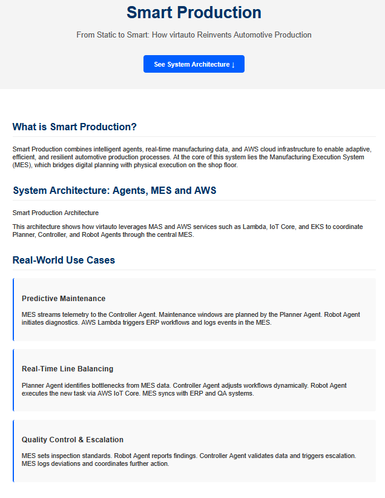

GEORGE
GEORGE ist unser domänenspezifischer Orchestrierungs‑Agent für Entwicklung & Produktion.
Er verbindet Git, Build‑Systeme, Fabrik‑IT (MES/SCADA), Datenplattform und UI.
Capabilities
- CI/CD‑Koordination mit Qualitäts‑Gates und Auto‑Rollback
- Health‑Probes mit Retries, Marker‑Checks und Backups
- Workload‑Routing zu Spezialagenten (z. B. Simulation, Analytics, Shopfloor)
- Policy‑ & Secrets‑Handling (Least Privilege)
Integrationen
- GitHub Actions / Runners, Artefakt‑Storage
- Rest‑APIs zu MES/SCADA/PLC‑Gateways
- Data Lake / Warehouse (Batch & Stream)
- Identity / Audit Log
UI & APIs
- Live Status Dashboard (Pages)
- Job‑/Event‑APIs für Self‑Service Workflows
- Kontext‑basierte Assistenten für Entwickler & Operatoren
Architektur‑Überblick
